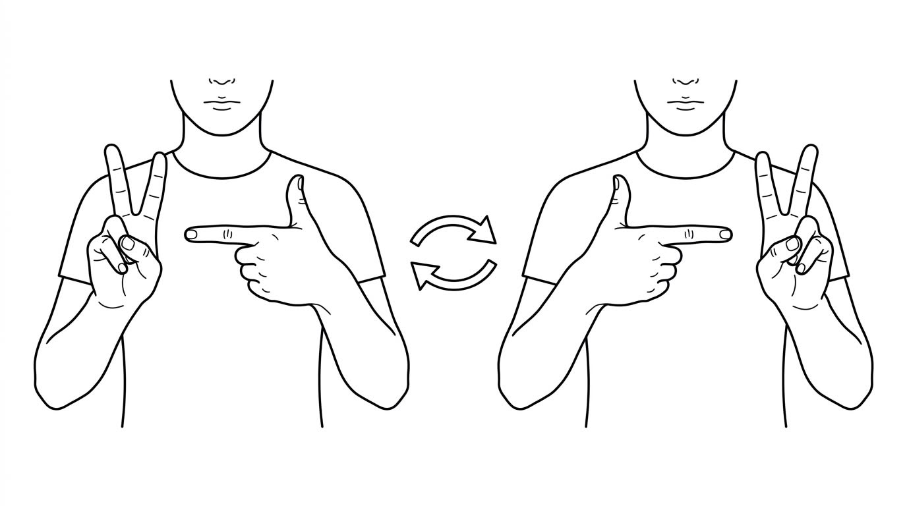

Le Lapin et le Pistolet
Inhibition du réflexe de symétrie

👉 Main gauche : Lapin
👉 Main droite : Pistolet
🔁 Basculez à chaque bip / vibration !
Le Décrochage du Réseau Exécutif
👉 Il est capital que vous amélioriez votre hygiène de vie au quotidien :
💧 1. Lutter contre l'hypotension et les vertiges
Maintien de la volémie cérébrale : apport hydrique (2 à 3L/jour), alimentation salée et manœuvres physiques de contre-pression.
🫁 2. Diminuer votre stress
Régulation du système nerveux autonome : découvrez la technique de respiration apaisante expliquée en vidéo par le Dr Christophe Dufour.
🛏️ 3. Bien dormir
Régularité des horaires, reconditionnement lit = sommeil uniquement, zéro écran 1h avant et règle des 20 minutes sans montre.
🧠 4. Entraîner votre cerveau au quotidien
Renforcement du réseau exécutif en conditions écologiques réelles : jeux de stratégie, cuisine complexe, orientation sans plan, courses optimisées, etc.
🏃 5. Faire du sport
Renforcement de la neuroplasticité et stabilisation autonome par des activités aérobies douces et régulières (Marche nature, Natation).
📓 Journal de Suivi CFD
Notez chaque crise ou aura, évaluez si vous avez repris le contrôle, et transmettez la synthèse à votre médecin.